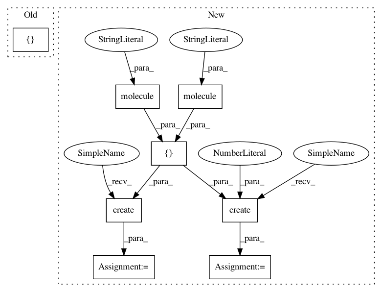

585c528dade20154da38b06eaea8e53efb0a0d25,examples/soap.py,,,#,3
Before Change
// Creating multiple descriptors in parallel
from dscribe.utils import batch_create
molecule_lst = [water, methanol]
batch = batch_create(average_soap, molecule_lst, n_proc=1)
print(batch.shape)
After Change
print(soap_water.shape)
// Create output for multiple system
samples = [molecule("H2O"), molecule("NO2"), molecule("CO2")]
positions = [[0], [1, 2], [1, 2]]
coulomb_matrices = soap.create(samples, positions) // Serial
coulomb_matrices = soap.create(samples, positions, n_jobs=2) // Parallel
// Lets change the SOAP setup and see how features change
minimal_soap = SOAP(species=atomic_numbers, rcut=rcut, nmax=2, lmax=0)
In pattern: SUPERPATTERN
Frequency: 3
Non-data size: 8
Instances
Project Name: SINGROUP/dscribe
Commit Name: 585c528dade20154da38b06eaea8e53efb0a0d25
Time: 2019-04-08
Author: lauri.himanen@aalto.fi
File Name: examples/soap.py
Class Name:
Method Name:
Project Name: SINGROUP/dscribe
Commit Name: 80aae47653e57007f1788ecd921b725c937efe9e
Time: 2019-04-05
Author: lauri.himanen@aalto.fi
File Name: examples/readme.py
Class Name:
Method Name:
Project Name: SINGROUP/dscribe
Commit Name: 585c528dade20154da38b06eaea8e53efb0a0d25
Time: 2019-04-08
Author: lauri.himanen@aalto.fi
File Name: examples/soap.py
Class Name:
Method Name:
Project Name: SINGROUP/dscribe
Commit Name: 3b568a7476417375e95daefbc0c8df8d07c597b1
Time: 2019-04-08
Author: lauri.himanen@aalto.fi
File Name: examples/coulombmatrix.py
Class Name:
Method Name: